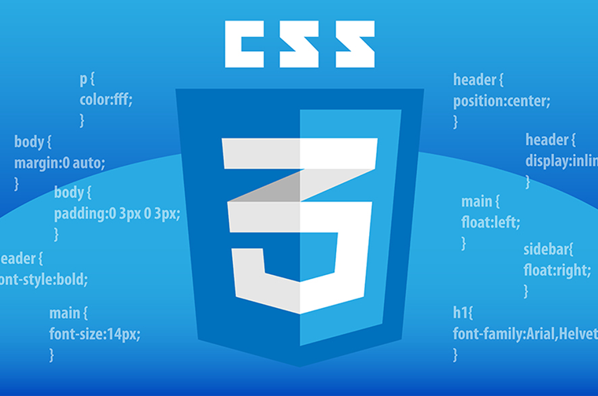

Flexbox (Flexible Box Layout) es un modelo de diseño en CSS que permite crear diseños más eficientes y predecibles cuando se trata de distribuir espacio y alinear elementos en un contenedor, incluso en situaciones complejas.

Flexbox (Flexible Box Layout) es un modelo de diseño en CSS que permite crear diseños más eficientes y predecibles cuando se trata de distribuir espacio y alinear elementos en un contenedor, incluso en situaciones complejas.
CSS Grid Layout es un sistema de diseño bidimensional que permite crear diseños complejos y flexibles en una cuadrícula.
